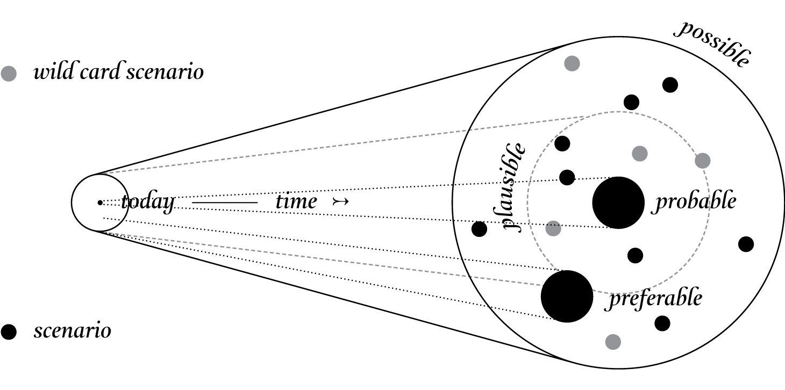

Introduction to Ag Informatics
Module 7, Lecture 2Ankita Raturi, ankita@purdue.edu
Outline for Today
- Speculative Design
- Envisioning CyberAgrarian Futures
Speculative Design
- A design method for imagining alternative futures.
- Remove commercial constraints and focus on the ideas.
- Use models and prototypes to ask questions about what is "normal" and "expected".
- Use fiction to present alternative products, systems, or ways of being.
- Family of methods:
- Critical Design: invite debate on what is "good".
- Design Fiction: explore the hypothetical.
- Design Probes: investigate specific opportunities.
what this is not: aliens for the sake of aliens.
Speculative Design Stragies
- Familiarity: Evoke a sense of what is known and manage expectations.
- Provocation: Demand critical thinking.
- Verisimilitude: Appear true/real while avoiding the uncanny valley.
- Adaptation: Working within a defined-ish existential logic.
Charting a design roadmap
- Probable: traditional design space.
- Plausible: alternative futures, linked with the today’s world.
- Possible: includes all extreme scientifically possible scenarios.
- Preferable: using speculative design to debate and discuss what is the preferable future.
- Beyond cone: fantasy. Wild card scenarios: low-probability and high-impact – to think about and discuss a much wider set of possibilities.
https://speculative.hr/en/introduction-to-speculative-design-practice. https://speculative.hr/en/introduction-to-speculative-design-practice
Retrofutures: 1921
La Science et la Vie. 1921. http://cnum.cnam.fr/CGI/fpage.cgi?SCVIE.057/0001/100/196/20/178
Retrofutures: 1957
Farm of the Future, Shell Calendar. 1957
Retrofutures: 1970s


Space Colony Art from the 1970s. NASA Ames Research Center. https://space.nss.org/settlement/nasa/70sArtHiRes/70sArt/Torus_Interior_AC75-2621_5718.jpg
Retrofutures: 1984
The Future World of Agriculture - Walt Disney World EPCOT Center book - 1984
Possible Speculations
Midjourney, Interstellar
Probable Speculations


Robo Hub
Activity: Speculating
Cyber-Agrarian Futures
What do you imagine when you think of the future of AG-TECH?
- When is the future? Thinking of time.
- Who is in the future? Thinking of life.
- Where is the future? Thinking of places and communities.
- How do we feel about the future? Thinking of hopes and fears.
Place on the board, near similar sticky-notes.
Activity: Creating a Hope Cycle
- Looking back & forward [5 minutes]
- Past tech: what worked? what didn't?
- Current tech: what has been adopted? in R&D?
- Future tech: what has been promised? imagined?
-
Cluster tech on the cycle [5 minutes].
- What type of footprint did it leave?
- Adoption? Market penetration?
- User Satisfaction? Return on investment?
- Feasibility? Usefulness? Joy?
- Reflect [10 minutes]
Current and emerging tech?
- Indoor Agriculture: sense of control
- AI for Agriculture: sense of support
- Smarter Supply Chains: sense of efficiency
- Automation: sense of agency
- IoT: agumented senses
- Virtual Reality: simulating possible futures
- What else did we remember/imagine?
Questions?
License
- Attribution Recommendation: Introduction to Agricultural Informatics Course", Ankita Raturi, Purdue University, 2021. Available at https://github.com/ag-informatics/ag-informatics-course. Licensed by CC BY-NC-SA 4.0.

This course is licensed under a Creative Commons Attribution-NonCommercial-ShareAlike 4.0 International (CC BY-NC-SA 4.0) license. This is a human-readable summary of (and not a substitute for) the license. Official translations of this license are available in other languages.
You are free to:
- Share — copy and redistribute the material in any medium or format
- Adapt — remix, transform, and build upon the material
Under the following terms:
- Attribution — You must give appropriate credit, provide a link to the license, and indicate if changes were made. You may do so in any reasonable manner, but not in any way that suggests the licensor endorses you or your use.
- NonCommercial — You may not use the material for commercial purposes.
- ShareAlike — If you remix, transform, or build upon the material, you must distribute your contributions under the same license as the original.
- No additional restrictions — You may not apply legal terms or technological measures that legally restrict others from doing anything the license permits.